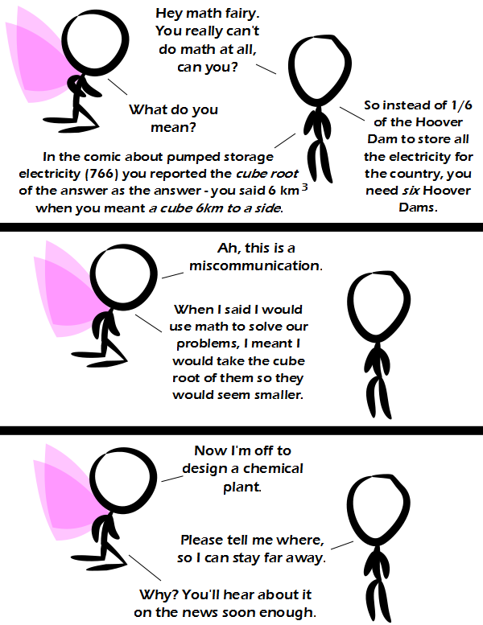

Comic JK 873
When I Feel Like It
⇤
<
?
>
⇥

⇤
<
?
>
⇥
Forum
.
RSS
.
Digg
.
Facebook
.
Reddit
.
Twitter
.
Stumbleupon
Enter your thoughts on number 873 here. Please, no spamming, trolling, or phreaking. I demand peer review for this comic. >*Reviewed* >>*Peered* >>>*Thised* If 36=1, and 42=everything, then (6*6)/6 +1 = (6*7), 7-6=1=36, 36+36= 72= everything plus 30. It's late. Your mother (AKA, the dorky college boy seduction fairy) can't really do dorky college boys, but that doesn't keep her from trying. Combustible fuels are way cheaper </argument> > Gszg nfhg nvzm blfi nln rh z xlnyfhgryov ufvo. >> Lmob zugvi R nzpv svi xfn. > Zmw glgzoob ivmvdzyov. Orpv, uli vcznkov, gizmhulinrmt blfi nln rmgl kvgilo. >>Bl nznz'h vmvitb wvmhrgb hl srts, hsv ivmwvih zogvimzgrev vmvitb vxlmlnrxzoob rmuvzhryov. >>>Ph'nglui Mglw'nafh Cthulhu R'lyeh wgah'nagl fhtagn >>>>Aaaahhhh!! Oh no, oh no, oh no! Why did you do that!!?? >>>>Please carry your obscenities on in code. This tool will help: rumkin.com/tools/cipher/atbash.php Does "Smoking Math Fairydust" make anyone else think of vaporizing methamphetamine? *MATHamphetamine Units square and square units are something that I should emphasize more often with students. Because it comes up more often than cubic units and units cubed. >Your anus likes to cube my units - if you know what I mean.